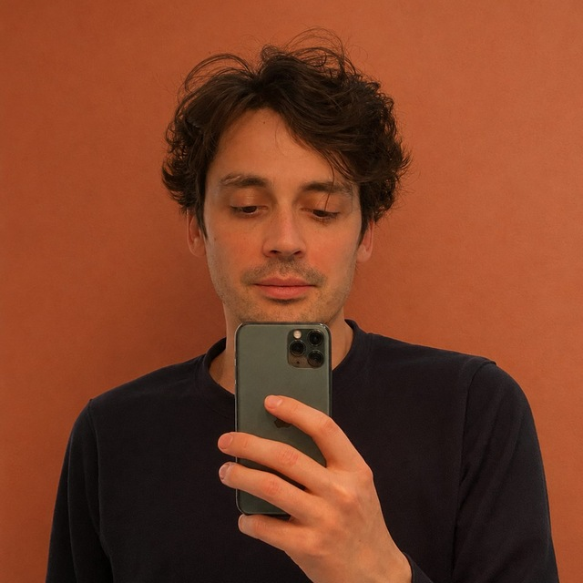

Зроблено своїми — для своїх

M-01Мене звати Костянтин. В Італії я живу з 2023 року. Я люблю цю країну, але кілька разів потрапляв у прикрі ситуації. Шукав квартиру — і натрапляв на ріелторів, які просто не хотіли мені її здавати. Переплачував за обслуговування авто. А одного разу опинився у швидкій, бо лікарка мене не розуміла й виписувала таблетки замість того, щоб призначити обстеження.
Я переконаний, що нічого з цього не сталося б, якби я мав під рукою контакти лікаря, ріелтора й інших фахівців, з якими ми говоримо однією мовою.
Тому я зробив Majstr — курований каталог україно- та російськомовних спеціалістів. Він зібраний із рекомендацій реальних людей у телеграм-чатах і групах у соцмережах. Вірю, що комусь це допоможе знайти потрібного фахівця, а самим фахівцям — своїх клієнтів.
Усього цього могло б не статися, якби поруч був хтось, хто говорить твоєю мовою.
— Костянтин, засновник Majstr